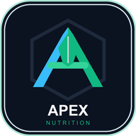

Política de Privacidad — Apex NutritionÚltima actualización: 31 de octubre de 2026
La aplicación recopila los siguientes datos proporcionados voluntariamente por el usuario para efectuar los cálculos metabólicos y de rendimiento:
Si eliges conectar tu cuenta de Google Fit con Apex Nutrition, la aplicación solicitará permiso de solo lectura para el alcance:
https://www.googleapis.com/auth/fitness.activity.read
Uso exclusivo de los datos de Google Fit:
com.google.step_count.delta).localStorage de tu navegador, junto al resto de datos de la app. No se envían a servidores propios ni a terceros.La pestaña IA es completamente opcional. El envío está desactivado hasta que tú introduces tu propia API key de OpenCode, configuras la URL del proxy y marcas la casilla de consentimiento. Apex Nutrition no incluye ninguna API key compartida ni la suscripción de otra persona: si no configuras tu key, la app no llama a ningún modelo.
Qué se envía cuando usas la IA:
Quién recibe los datos: la petición pasa por un proxy (Cloudflare Worker) que resuelve el bloqueo CORS. Ese proxy no guarda la API key, no registra cabeceras ni cuerpos y no almacena los datos. Después, la petición llega a OpenCode (opencode.ai), el proveedor del modelo que elijas. El proveedor puede aplicar su propia política de retención; por ejemplo, Beam Free no entrena con los datos y los retiene durante 30 días según la información publicada por OpenCode.
Tu API key: se guarda únicamente en tu navegador, en una clave separada de la configuración y fuera de las copias de seguridad y exportaciones, solo si marcas «Guardar la key en este dispositivo». Si no la marcas, se mantiene en memoria durante la sesión. La key guardada no se inserta automáticamente en la interfaz ni se registra en la consola; solo se muestra lo que tú escribas manualmente y decidas revelar con el botón de visibilidad. Puedes borrarla en cualquier momento con «Borrar key» o con «Limpiar Todo».
Historial de chat e informes: el historial de conversación y los informes semanales se guardan localmente en tu navegador, también fuera de las copias de seguridad, y puedes borrarlos desde la propia pestaña IA. El asistente es de solo lectura: no modifica comidas, pesos, objetivos ni ajustes.
Si no aceptas este tratamiento, no actives la casilla de consentimiento: el resto de la aplicación seguirá funcionando con normalidad y sin enviar datos a nadie.
El 100% de la información gestionada por la app reside localmente en la memoria de tu dispositivo mediante la tecnología localStorage del navegador web. Esto incluye los datos de salud, el token de Google Fit y los pasos sincronizados. Tienes el control total sobre tus datos y puedes exportarlos en un archivo JSON o eliminarlos por completo en cualquier momento usando la función "Limpiar Todo" en la sección de Configuración.
Apex Nutrition no utiliza cookies publicitarias, ni herramientas de rastreo ni analíticas de terceros (como Google Analytics, Facebook Pixel, etc.). Únicamente utilizamos Service Workers para garantizar el funcionamiento offline de la aplicación.
Nos reservamos el derecho de actualizar esta política de privacidad en cualquier momento. Cualquier modificación se reflejará en esta misma página web.
Si tienes cualquier duda respecto a esta política de privacidad o al funcionamiento de la aplicación, puedes ponerte en contacto a través de nuestro repositorio oficial de GitHub o vía correo electrónico.